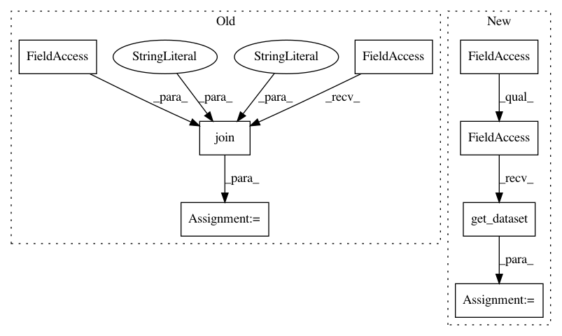

47a3f125e816273ca137279096131ec78072c098,test/test_automl/test_automl.py,AutoMLTest,test_fail_if_dummy_prediction_fails,#AutoMLTest#Any#,340
Before Change
def test_fail_if_dummy_prediction_fails(self, ta_run_mock):
backend_api = self._create_backend("test_fail_if_dummy_prediction_fails")
dataset = os.path.join(self.test_dir, "..", ".data", "401_bac")
time_for_this_task = 30
per_run_time = 10
auto = autosklearn.automl.AutoML(backend_api,
After Change
def test_fail_if_dummy_prediction_fails(self, ta_run_mock):
backend_api = self._create_backend("test_fail_if_dummy_prediction_fails")
X_train, Y_train, X_test, Y_test = putil.get_dataset("iris")
datamanager = XYDataManager(
X_train, Y_train,
X_test, Y_test,
task=2,
In pattern: SUPERPATTERN
Frequency: 3
Non-data size: 8
Instances
Project Name: automl/auto-sklearn
Commit Name: 47a3f125e816273ca137279096131ec78072c098
Time: 2020-06-15
Author: 44504424+franchuterivera@users.noreply.github.com
File Name: test/test_automl/test_automl.py
Class Name: AutoMLTest
Method Name: test_fail_if_dummy_prediction_fails
Project Name: automl/auto-sklearn
Commit Name: 47a3f125e816273ca137279096131ec78072c098
Time: 2020-06-15
Author: 44504424+franchuterivera@users.noreply.github.com
File Name: test/test_automl/test_automl.py
Class Name: AutoMLTest
Method Name: test_do_dummy_prediction
Project Name: automl/auto-sklearn
Commit Name: 47a3f125e816273ca137279096131ec78072c098
Time: 2020-06-15
Author: 44504424+franchuterivera@users.noreply.github.com
File Name: test/test_automl/test_automl.py
Class Name: AutoMLTest
Method Name: test_automl_outputs